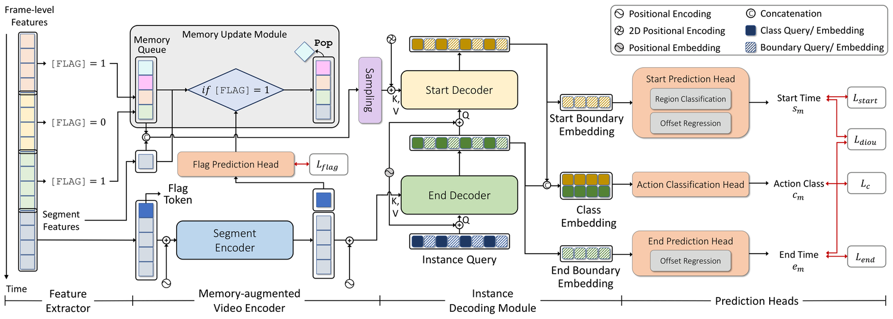

能拿到一条「按需写入、先终点后起点」的在线实例流水线；代价是实例必须等到终点可见才能提交，提交延迟下限就是动作时长。
- 最小可复用件
- flag 门控的 FIFO 片段记忆（
[FLAG]token + BCE，阈值 0.5），加终点 embedding 条件化的起点回溯头：Lm+2个时间区先分类、再在区内回归偏移。 - 主要风险
- 漏写不可恢复。flag 判 0 的片段直接丢弃，其起点之后再无证据可取；动作长于记忆覆盖范围时起点只能退化到最早一块历史。
- 复现门槛
- 冻结的 TSN / I3D 特征 + 实例级起止与类别标注；THUMOS14 配置 192.8M 参数、167.1 ms 一步，单卡可训可跑。
1. 核心摘要
On-TAL 的既有做法每一轮只吃一个固定长度片段：片段短则看不到动作起点，片段长则算力上升、还要为每个数据集重调长度。MATR 把「看多远」从输入尺寸里拆出来：片段经 3 层 encoder 编码后，由可学习 [FLAG] token 判断它是否与任一动作实例有帧重叠，命中才写入 FIFO 记忆队列；实例解码分两级，end decoder 只看当前片段定位正在结束的动作，其输出 embedding 再作为 start decoder 的 query，去记忆队列回溯起点。起点不再直接回归，而是先分到 Lm+2 个时间区、再在区内回归偏移。THUMOS14 平均 mAP 49.5、MUSES 14.4，比同协议的 OAT-OSN 高 4.9 与 0.7 个百分点（Table 1）。判定：这是「选择性写入 + 终点条件化回溯」最小的可运行样本，代价是提交时刻被动作终点锁死。
2. 事件流水线定位
该工作落在边界定位：类别、终点、起点由三组头给出，但终点与起点来自两个解码器、两份不同的可见信息。记忆写入只标为部分命中，因为队列确有写入规则（flag 门控）与淘汰规则（FIFO），却只存片段特征，不做语义抽象、不做合并、没有检索接口，也不允许回改已提交的实例——当缓存看比当记忆系统看更准确。上游假设特征按固定帧率算好、滑窗逐帧移动；下游拿到全局时间坐标下的完整实例，且只在终点可观测后出现。
| 环节 | 内容 |
|---|---|
| 输入 | 每 Ls 帧的片段特征块（THUMOS14 为 64 帧，MUSES 为 75 帧），加一个 [FLAG] token |
| 输出 | 每个时间步 N 条 (start, end, class)，NMS 后终点晚于当前时刻的条目被剔除 |
| 交给下游 | 已定稿的实例；其起点由当时队列里仍保留的历史片段决定，之后无法修正 |
3. 问题与动机
On-TAL 有两条硬约束：只能用当前时刻之前的帧；已输出的实例不得回改。在此之下，窗口大小成为唯一的历史旋钮，而它同时决定算力与可见范围。OAT 的解法是窗口右端钉在当前帧、K 条 anchor 终点相同只有长度不同，起点靠长度回归倒推——起点最远只能推到窗口左界，动作长于窗口时被静默截断。论文用缩短片段把这条失效模式量化：Ls 从 64 降到 8，OAT-OSN 平均 mAP 从 44.6 掉到 25.8，MATR 只掉 9.1 个百分点。
另一条路线 CAG-QIL 是逐帧 OAD 概率再分组：非动作帧概率偶发高值就切出碎片，动作中段概率下滑就切断实例，同类动作相邻就并成一条。根因一致——分组只有逐帧证据，没有实例级监督，边界是事后拼出来的。
两条路线的共同问题不是精度而是信息不对称：终点一定落在当前片段内，起点可能早已离开任何固定窗口。MATR 把这条不对称直接写进结构，而不是继续调窗口长度。
| 维度 | OAT-OSN（滑动窗口 anchor） | MATR |
|---|---|---|
| 历史使用方式 | 长 Lq 的连续帧队列全部进 encoder，无选择，移出窗口即丢失 | 只保留 [FLAG]=1 的片段特征块，FIFO 淘汰，Lm 为 7（THUMOS14）/ 15（MUSES） |
| 提交时机 | anchor 终点钉在当前帧，动作未结束即可输出整实例，由 OSN 门控决定何时写入 | 终点在当前片段内定位，预测终点晚于当前时刻的实例被剔除，提交发生在动作结束之后 |
| 延迟来源 | 窗口累积上下文 + OSN 为等更优候选主动推迟，AEDT 为负（平均提前 1.2 秒量级） | 每步前向开销 + 「必须等到终点可见」的固有延迟；论文未报 AEDT |
4. 方法拆解

Figure 2：记忆队列、flag 更新与 end→start 两级解码的数据流。原图 PDF 见 figures/fig2_architecture.pdf（作者 LaTeX 源码渲染）。
4.1 输入与时间表征
输入是帧级预训练特征，backbone 全程冻结：THUMOS14 用双流 TSN（RGB+光流），MUSES 用 I3D（仅 RGB）。每 Ls 个连续帧组成一个片段，片段特征 Xt ∈ R^(Ls×D)，D=1024。片段特征与可学习 [FLAG] token 拼接、加正弦位置编码后进 3 层 8 头 encoder。滑窗逐帧移动一格，相邻片段有 Ls-1 帧重叠，这既让记忆里的块高度冗余（读取前做 50% 均匀采样），也让「一段历史」实际以片段为单位而非帧为单位被索引。
4.2 关键机制
队列里存什么。存的是被选中的片段特征块 Ls×D，不是单帧向量，也不是压缩后的语义槽。作者的理由是 TAL 与 OAD 不同：要回归精确时刻，就必须保留帧级时间位置，所以位置信息随特征一起进队列，而不是事后由顺序推断。
写入规则。[FLAG] 的标签定义为「该片段与任一动作实例存在重叠帧」，用 BCE 训练 flag head（2 层 FFN）；推理时 sigmoid(ĝ) > 0.5 入队，否则整块丢弃。这个判据只看当前片段是否与动作相关，不看记忆里已有什么，因此写入决策本身没有上下文。
淘汰规则。队列满时丢最旧的一块（FIFO）；每段新视频开始时重置，避免跨视频混队。容量 Lm 取 7（THUMOS14）与 15（MUSES），选择依据是覆盖训练集 99% 的实例时长。
位置编码。起点解码器的 cross-attention 对记忆用二维时序位置编码：相对 segment 位置（该块相对当前片段的位置）与相对 frame 位置（帧在块内的位置）各用 D/2 维正弦编码后拼接。这样做的必要性在于视频时长不可预知、且队列因跳写而不连续，绝对时间戳无法预先归一化。
先终点后起点的解码。每个片段给 N 个实例，用 2N 个 query：N 个 class query 与 N 个 boundary query，成对共享同一位置嵌入。end decoder 以当前片段特征为 key/value，回归终点偏移；start decoder 的 query 直接取 end decoder 的输出 embedding，key/value 换成记忆队列。起点不是自由回归，而是先把时间轴划成 Lm+2 个区做分类、再在选中区内回归偏移。理由是终点只需在片段附近定位，起点却要在记忆覆盖的更大跨度上搜索；用终点条件化起点，等于先用最可靠的证据锁定实例，再拿它去检索历史。消融很直接：单 decoder 同时出起止为 42.7，分离后为 49.5。
训练监督。用 Hungarian 算法匹配，代价为分类概率加 IoU；只监督终点落在 [t-Td+1, t+Ta] 的实例（Td=Ta=16）。总损失五项等权（系数均为 1）：分类 focal、终点 L1、起点「区分类交叉熵 + 区内偏移 L1」、DIoU、flag BCE。DIoU 不可省，去掉后平均 mAP 从 49.5 降到 41.4。
4.3 输出与在线边界
因果性明确：窗口右端即当前时刻，不使用未来帧，也没有离线后处理。保留的历史是至多 Lm 个 flag 命中块；若这些块连续，THUMOS14 的 7 块约覆盖 70 个特征帧，跳写时实际跨度更长但中间有空洞。推理时每步对 N 条实例做阈值 0.3 的 NMS，并把预测终点晚于当前时刻的条目删掉——后者说明训练时允许的 +Ta 前瞻在推理阶段被主动禁用。
延迟有两个来源：单步前向，以及结构性等待。THUMOS14 上 Ls=64 为 167.1 ms / 6.0 fps，参数量 192.8M；Ls=16 时降到 53.8 ms / 18.6 fps、mAP 46.3。即便算力足够，实例也要等终点进入片段才可能被提交，因此单条实例的延迟下限约等于它的时长；这不是实现问题，是「先终点」的定义决定的。收益在另一头：历史长度不再绑住输入长度，片段可缩到 16 帧仍有 46.3 mAP、单步 53.8 ms，而 OAT 把片段缩到 8 帧就掉到 25.8。
5. 证据与实验
评测集只有 THUMOS14 与 MUSES，指标为 tIoU 0.3–0.7 的 mAP（Table 1，%）：
| 方法 | 数据集 | 0.3 | 0.4 | 0.5 | 0.6 | 0.7 | 平均 |
|---|---|---|---|---|---|---|---|
| OAT-OSN | THUMOS14 | 63.0 | 56.7 | 47.1 | 36.3 | 20.0 | 44.6 |
| MATR | THUMOS14 | 70.3 | 62.7 | 52.1 | 38.6 | 23.7 | 49.5 |
| OAT-OSN | MUSES | 22.1 | 18.5 | 14.2 | 8.9 | 4.7 | 13.7 |
| MATR | MUSES | 23.5 | 19.3 | 14.3 | 9.4 | 5.7 | 14.4 |
相对 OAT-OSN 的增益在 THUMOS14 上集中于低阈值（0.3 处 +7.3），高阈值只 +3.7，说明记忆主要补回了「整条实例被窗口截断」这类错误，而非把边界磨得更细。论文声称超过部分离线方法：THUMOS14 上确实高于 G-TAD 的 39.9，但低于 ContextLoc 的 50.9；MUSES 上 14.4 仍低于离线 MUSES 的 18.6。
记忆本身的价值见 Table 3(a)：去掉记忆为 46.0，容量 1/3/7/11/15/19 分别为 47.7/48.3/49.5/47.9/48.0/49.1，非单调；MUSES 上则由 13.3 升到 15 块时的 14.4。Table 4 显示这套记忆只增加 24.0M 参数（MAT 为 40.1M），推理反而更快。
论文只报 THUMOS14 与 MUSES，ActivityNet 与 FineAction 上的 mAP 未在已核验的公开材料中确认。mAP 本身是处理完全部帧后汇总计算的，无法区分「及时提交」与「迟到提交」，而本文没有 AEDT 一类指标，因此在线时效只能从结构与 fps 推断，不能从精度表读出。
6. 优点、局限与 VLA 适配
可迁移
flag 门控写入 + FIFO 淘汰这套「按需存、定长存」的预算控制；两级相对位置编码，让不连续历史仍可被索引；以及把宽范围起点回归换成「区域分类 + 区内偏移」，这是降低长历史检索难度的通用手法。
不成立的前提
On-TAL 提交的是已经结束的片段，VLA 要界定的是正在执行、尚未结束的技能，时间方向相反；flag 只看当前片段是否与实例重叠，不看任务语义，机器人上「与任务相关」不等于「与动作区间重叠」；mAP 与 fps 也都不是控制回路真正关心的量。
在 VLA 里，「先终点后起点」等价于先确认状态转移已完成，再回溯起始观测：把夹爪闭合、接触中断、物体离桌这类可观测事件当作终点证据，再用终点 embedding 去记忆里检索该段技能的初始观测，回答「这段技能从哪一帧开始、初始状态是什么」。这个顺序还有一个副产品——起止配对给出技能时长，异常短或异常长的实例可以直接判为误检，不必另训一个判别器。代价同样明确：技能结束前无法提交，做不了提前规划；若要前瞻，只能把终点头改成「预测终点 + 剩余时长」，而那时记忆里还没有终点之后的证据，误差会沿起点回溯继续放大。
容量选择不能照抄 7 或 15。论文的原则是覆盖 99% 实例时长，但消融显示容量并非越大越好：THUMOS14 上 11/15/19 都没超过 7，作者归因于记忆里出现多个外观相似的起点后，实例被匹配到错误起点；MUSES 则要 15 才最优。工程上应按「最长需要回溯的技能时长 ÷ flag 命中率」估初值，再在自有数据上扫一遍；控制频率越高，同一时长需要更多块，容量与帧率耦合，换平台必须重标。
7. 落地清单
- 复刻 flag 门控写入：以「片段与任务区间有帧重叠」为标签训练
[FLAG]，阈值 0.5 入队，超长 FIFO 淘汰，换视频重置队列。 - 用
Ls=64、Lm=7、N=10在 THUMOS14 上跑通，再按自有数据的最长技能把Lm扫一遍（1/3/7/11/15），同时记录 mAP 与起点误差。 - 把起点回归改为「
Lm+2区域分类 + 区内偏移」，与直接回归对比高 tIoU 下的边界误差。 - 分开 end / start 两个 decoder，先验证单 decoder 的退化幅度（论文为 42.7 对 49.5），再决定是否值得两份参数。
- 在机器人日志上把终点换成可观测的终止事件（接触中断、夹爪闭合），测量从事件发生到实例提交的端到端延迟。
来源：Youngkil Song, Dongkeun Kim, Minsu Cho, Suha Kwak, "Online Temporal Action Localization with Memory-Augmented Transformer", ECCV 2024；arXiv:2408.02957v1（2024-08-06 提交）https://arxiv.org/abs/2408.02957；官方项目页 https://cvlab.postech.ac.kr/research/MATR/；代码 https://github.com/SKH-CJH/MATR。结构参数取自第 3 节与 4.3 节，数字取自 Table 1、Table 3、Table 4、Table 7，位置编码细节见附录 A。
图像说明：Figure 2 由作者 LaTeX 源码中的 fig2_architecture.pdf 渲染为同名 PNG，原图 PDF 保留在 figures/fig2_architecture.pdf。
相关页面：OAT · 滑动窗口 anchor 与提交门控 · OadTR · 流式 transformer 编码 · CAG-QIL · 逐帧分组的模仿学习路线 · 返回总站